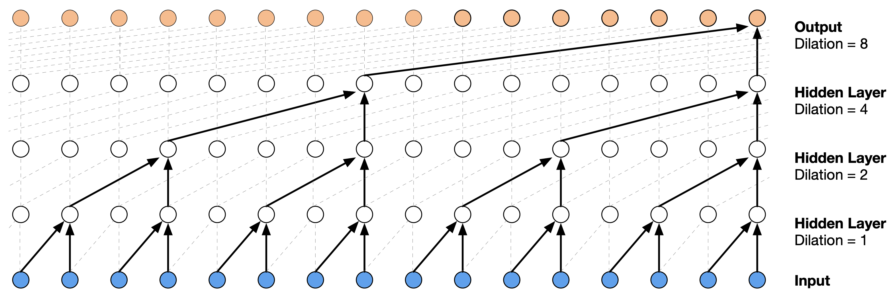
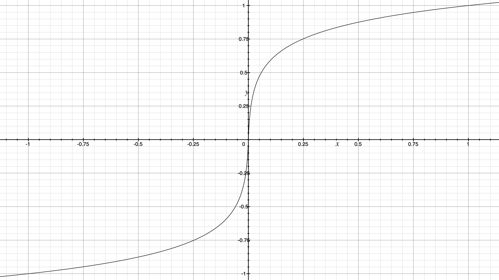
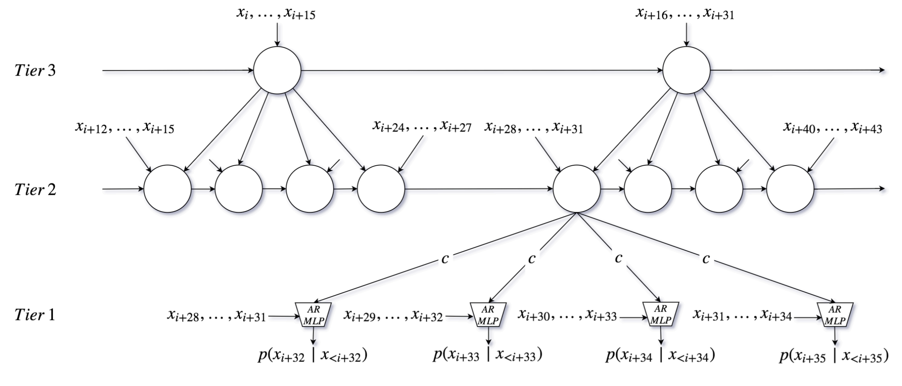
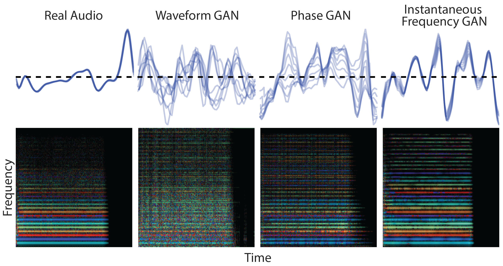

Musical Audio Generation#
Goal of the Task#
Musical audio generation aims to create various musical content, from individual notes to full instrumental arrangements and complete songs. In the early days of audio generation research, methods often focused on producing audio directly in the time or time-frequency domain. Recent approaches, however, work with compressed representations, often using neural audio codecs.
The most widely used models today are autoregressive (Transformer) architectures and diffusion models. Autoregressive architectures are particularly effective for discrete codecs, while diffusion models are better suited for continuous representations.
Popular Datasets#
NSynth: NSynth was once the go-to dataset for musical audio generation. It contains short, synthetic, single-note samples from different instrument families and detailed metadata, making it a valuable resource for early experiments.
GTZAN (delete?): The GTZAN dataset is often used for genre classification and can serve as a starting point for more complex audio generation tasks involving diverse genres.
MusicNet: Contains recordings of classical music with aligned annotations, suitable for tasks involving complex musical structures.
MAESTRO: The MAESTRO dataset features piano performances, providing MIDI and corresponding audio recordings. This makes it particularly useful for training models of high-quality piano music generation.
MagnaTagATune: Offers a large collection of music with tags, useful for genre classification and multi-label tasks.
Neural Musical Audio Synthesis#
Early Works#
Before the rise of Transformers and diffusion models, models like Causal Convolutional Networks, Recurrent Neural Networks (RNNs), and Generative Adversarial Networks (GANs) were used for musical audio generation.
At the time, it was common to generate in a low-level representation space, either directly in the signal domain (WaveNet, SampleRNN) or in the spectral domain (GANs).
Not least, due to their generation in such a high-dimensional space, CNNs/RNNs struggled with long-term dependencies, leading to repetitive or incoherent results without higher-level structure.
GANs were used to generate audio in the signal or frequency domain but faced challenges with training instability and producing high-quality, diverse outputs.
Through the usage of neural audio codecs and the resulting reduction in dimensionality, the problem became simpler.
Nowadays, through a combination of more efficient/simpler to-train generative models with generation in a compressed space, it is possible to generate high-quality, full-length music tracks.
WaveNet#

Figure 1: WaveNet architecture showing causal, dilated convolutions.
WaveNet [vdODZ+16] can be seen as the first successful attempt to directly generate audio using a Neural Network. Important components in WaveNet were dilated convolutions [YK16] that enabled an exponentially growing receptive field with linearly increasing numbers of layers. A big receptive field was critical in WaveNet because it worked directly in the signal domain with 16k samples/second. In addition, causal convolutions were used to prevent the model from looking into the future during training, resulting in a generative autoregressive sequence model.
Autoregressive sequence models are typically trained with cross-entropy loss that requires one-hot encoded sequences. As raw audio is usually 16-bit, a naive transformation into one-hot vectors would result in 65,536 dimensions per time step. To keep the problem tractable, in WaveNet, each sample is non-linearly scaled and quantized to obtain 256-dimensional vectors. The non-linear scaling function (ITU-T, 1988) is defined as

Figure 2: Non-linear scaling of audio samples in WaveNet for \(\mu = 255\) (in practice, \(-1 < x_t < 1\)).
Usage Example: WaveNet was used by Google for text-to-speech (TTS) applications.
SampleRNN#
 Figure 3: Snapshot of the unrolled SampleRNN model at timestep \(i\) with 3 tiers. As a simplification, only one RNN and up-sampling ratio \(r = 4\) is used for all tiers.
SampleRNN [MKG+17] was the first RNN-based neural audio synthesizer that had an impact in the community. It can effectively learn to generate long-form audio at a sample rate of 16kHz. While WaveNet builds hierarchical representations of audio by its built-in sub-sampling through dilated convolutional layers, SampleRNN builds such a hierarchy through multiple tiers of RNNs that operate in different “clock rates”. This approach enables representations at varying temporal resolutions, where lower tiers (faster rates) are conditioned on higher tiers. This encourages higher tiers to generate higher-level signal representations that help predict lower-level details.
Similarly to WaveNet, in order to keep the task tractable, the sample values are quantized to 256 bins—but without prior, non-linear scaling. As the memory of RNNs can be updated iteratively without the need to reconsider past inputs, they tend to need less compute at inference time than non-recurrent autoregressive models (like causal convolutions or transformers).
Usage Example: Different artists used SampleRNN for music generation. Notably, a livestream (by Dadabots) with Technical Death Metal music is ongoing with hardly any interruptions since March 2019.
Generative Adversarial Networks#
For several years, Generative Adversarial Networks (GANs) [GPougetAbadieM+14] were among the most influential generative models. Their ability to implicitly model multi-dimensional continuous-valued distributions made them a compelling tool for image and audio generation. This enabled the use of spectrogram (or spectrogram-like) representations in audio generation, which is a natural modality for 2D convolutional networks. Another motivation for using image-like spectrogram representations with GANs for audio generation was the ability to leverage insights from the broader image-processing community.
 Figure 4: GANSynth rainbowgrams to showcase the influence of different audio representations.
While WaveGAN [DMP19] was an influential work on using GANs directly for raw musical audio waveform generation, most works focussed on spectrogram-like representations. Examples for that are GANSynth [EAC+19], SpecGAN [DMP19], DrumGAN [NAVL22, NLR20], and DarkGAN [NLR21], omitting those only applied to speech. For simplicity reasons, the listed works can generate fixed-size outputs only. Some (later) examples of variable-size musical audio generation using GANs are VQCPC-GAN [NALR21] and Musica! [PSchluter22].
Presently, GANs are widely replaced by Diffusion Models, which are more stable in training, less prone to mode-collapse, and have a simpler architecture, resulting in higher-quality outputs.
A concept of GANs that could remain in the mid-term is the usage of adversarial losses from auxiliary networks, for example, for domain confusion or as additional loss in reconstruction-based training (e.g., in neural audio codecs, like DAC [KSL+23]).
Usage Example: DrumGAN was the first commercially available neural audio synthesizer integrated into Steinberg’s Backbone. It is now available for free as an online app.
Autoregressive (Transformer) Architectures#
Autoregressive models, especially those based on Transformers, are well-suited for generating sequences like musical audio. These models generate audio by predicting each subsequent token based on prior ones, effectively capturing long-term relationships, which helps produce coherent compositions.
Diffusion Models#
Diffusion models offer another approach to musical audio generation. They transform random noise into meaningful continuous audio representations.
How is the Task Evaluated?#
Evaluation of generation tasks is difficult. In other ML tasks, specific targets (e.g., labels, data points) are available in a given evaluation set, allowing precision estimation for a given model. In contrast, in audio generation, the goal is to sample from the distribution of the training set without directly reproducing any training data.
As a result, indirect, distribution-based evaluation metrics are commonly used rather than relying on one-to-one comparisons, as in autoencoders or classification tasks.
Frechet Audio Distance (FAD)#
Nowadays, the most commonly used metric in audio generation is the Frechet Audio Distance (FAD). FAD compares the statistics of generated audio to those of real audio using embeddings from a pre-trained model. This metric measures how close the generated audio is to the original data distribution, which helps assess the quality and diversity of generated samples.
Subjective Evaluation#
Objective evaluation metrics cannot capture all the details people care about when listening to audio. Therefore, it is very common (and important) in audio generation works to perform user studies. In user studies, participants might be asked to rate the quality of generated audio samples on a Likert Scale ranging from 1 (very poor) to 5 (excellent). This helps quantify subjective perceptions of audio quality, coherence, and musicality.
Likert Scale#
…